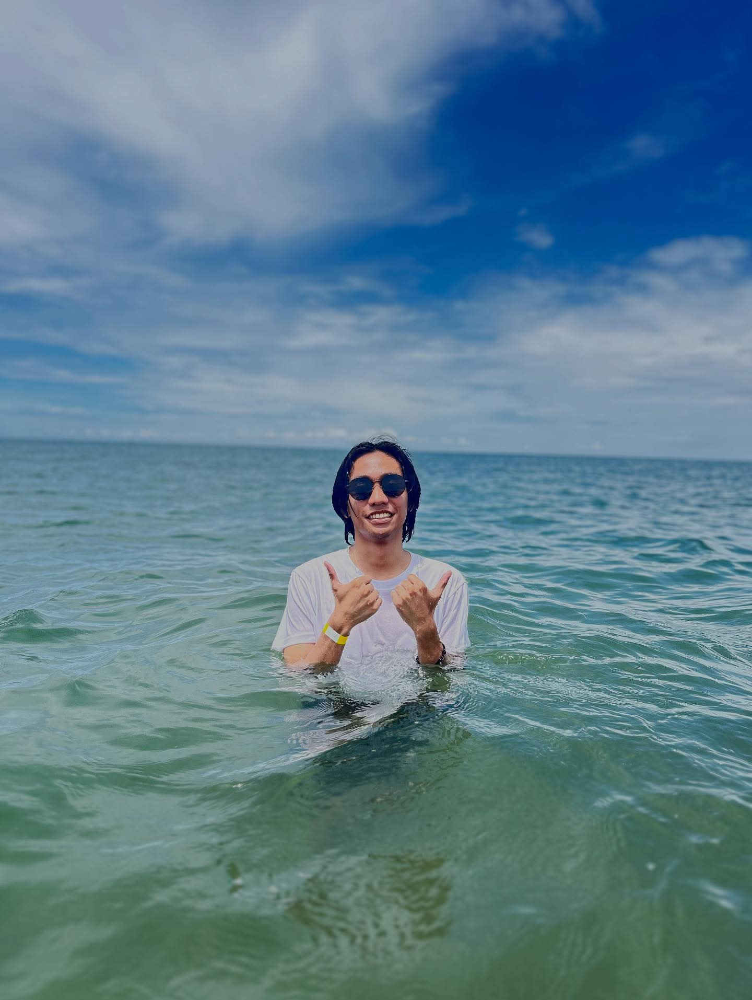

I'm passionate about gaming, creating music, and playing basketball. From competitive gaming to creating melodies and dominating the court, I bring my A-game to everything I do. Let me show you my world of endless possibilities and creative pursuits.
Explore My PassionsCompetitive gaming is my escape. Whether it's strategy or sports, I bring my A-game every time.
Creating melodies and harmonies is where my soul finds peace. Music is my universal language.
Basketball keeps me grounded. The court is where discipline meets passion and teamwork shines.
Hi! I'm Esteban T. Barrioga JR., a creative individual who thrives at the intersection of gaming, music, and sports. My journey is defined by passion, dedication, and the pursuit of excellence in everything I do.
Whether I'm strategizing in Wild Rift, creating melodies on my guitar, or playing basketball on the court, I bring 100% intensity to every endeavor. I believe in continuous growth and pushing boundaries.
This portfolio is a glimpse into my world a world where entertainment, creativity, and athleticism collide. Feel free to explore and get to know me better!